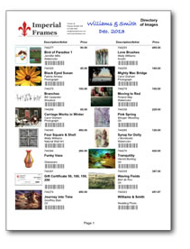

Business Tips
Wedding Registry
Can you use your FrameReady program as a Wedding Registry or Gift Wish List? Yes. Use the Products file for this purpose.
-
In the Products file, click the Unmark All button to remove the X in previously Marked boxes.
-
Have the bridal couple select the items they would like to have and click the Marked box for those selected items.
-
Perform a Find of the Marked records so that only their selected items are listed in the Products file List View.
-
Click on any one of the items and select either, Print Text Directory side bar button on the left or the Print Image Directory side bar button, or print both.

-
Print out the list and write the couples’ name on the top page(s) along with the date of their wedding, then file it into a nice looking binder entitled ‘Wedding Registry’, possibly with dividers for each month.
-
Save a copy as a PDF and store it in a ‘Wedding Registry’ file under the couples’ names. E.g. June – Smith-Jones.
How To: You must be in level3 or level4. In list view, click List View under "Layout" and select from the pop-up list, either, Text Directory or Image Directory. The screen will not show all of the pieces. That’s okay. Then click File> Save/Send Record As…>PDF and save it to the appropriate file.
-
If someone comes in wanting to purchase something for the couple, show them the directory page(s) or offer to email the PDF file to them or post it on your website if you have a Wedding Registry section.
This PDF copy is also handy in case someone walks away with the original or wants a copy of the list to take home and think about it. -
As pieces are purchased, cross them off the list, or stamp SOLD across the item, or somehow identify them as no longer available. On the email with the PDF attached, you might want to list the items already purchased for the couple.
-
As a nice touch, at the end of each month, send each couple a note thanking them for being registered at your store. (You might include a page showing the items still available on their wish list.) Or, prior to their first anniversary, send a Happy Anniversary card with a 10% off gift certificate (and the list of items which may still be available.) Also if one of the items on their registry list goes on sale during the year, you know that you have a potential buyer you can make aware of this new price.
Another Tip: In the Contacts file, under the Group/Details tab, select the Group: “Anniversary” and in Details, enter the wedding date. Add “Wedding Registry” to Group (by using Edit at bottom of list) and add any product #’s in the Details field.
Or, you could just enter “Wish List” to Group and use it for others. The advantage is that you can do a find for the product number in the Details field when the item is discounted and find everyone interested in purchasing it and email them a PDF of the item along with the sale price. The drawback is that the item will not be removed from the list automatically.
© 2023 Adatasol, Inc.